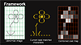

| SIGGRAPH2010 | ||
|
Structure-based ASCII Art |
||
|
ACM Transactions on Graphics (SIGGRAPH 2010 issue), Vol. 29, No. 4, July 2010, pp. 52:1-52:9. |
||
|
_____ ______ |
||
| Some browsers may not support the required fonts, click here if the above ASCII art is corrupted. | ||
|
Abstract The wide availability and popularity of text-based communication channels encourage the usage of ASCII art in representing images. Existing tone-based ASCII art generation methods lead to halftone-like results and require high text resolution for display, as higher text resolution offers more tone variety. This paper presents a novel method to generate structure-based ASCII art that is currently mostly created by hand. It approximates the major line structure of the reference image content with the shape of characters. Representing the unlimited image content with the extremely limited shapes and restrictive placement of characters makes this problem challenging. Most existing shape similarity metrics either fail to address the misalignment in real-world scenarios, or are unable to account for the differences in position, orientation and scaling. Our key contribution is a novel alignment-insensitive shape similarity (AISS) metric that tolerates misalignment of shapes while accounting for the differences in position, orientation and scaling. Together with the constrained deformation approach, we formulate the ASCII art generation as an optimization that minimizes shape dissimilarity and deformation. Convincing results and user study are shown to demonstrate its effectiveness.
|
|
Paper (PDF, 3.26M) |
|||||||||||||||||||||||||||||||
|  |
Presentation Slides |
||||||||||||||||||||||||||||||||
|
Animated ASCII Art (GIF) |
|||||||||||||||||||||||||||||||||
| User Study (Compare to Artists work) |
|||||||||||||||||||||||||||||||||
|
Visualization of Optimization (GIF) |
|||||||||||||||||||||||||||||||||
|
BibTex:
@article{xu-2010-structure, month = {July}, year = {2010}, volume = {29}, number = {4}, pages = {52:1-52:9}, } |
More Results: (Click to see the text) |
||||||||||||||||||||||||||||||||
|
|||||||||||||||||||||||||||||||||


{kind=link}
{kind=link}